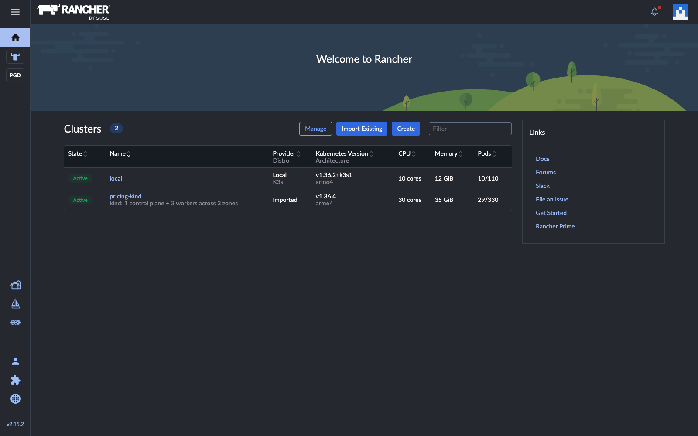
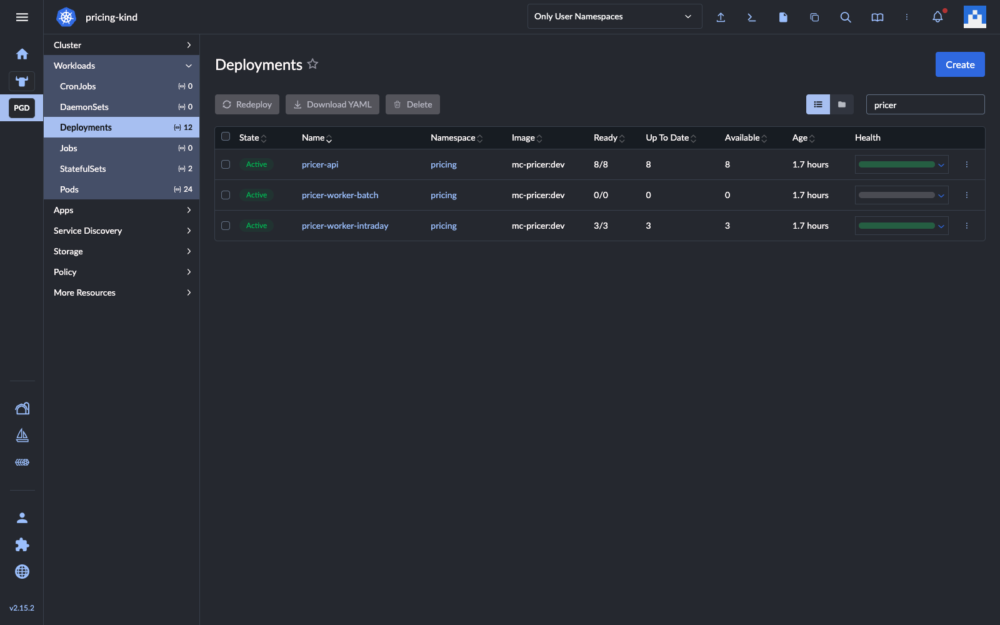
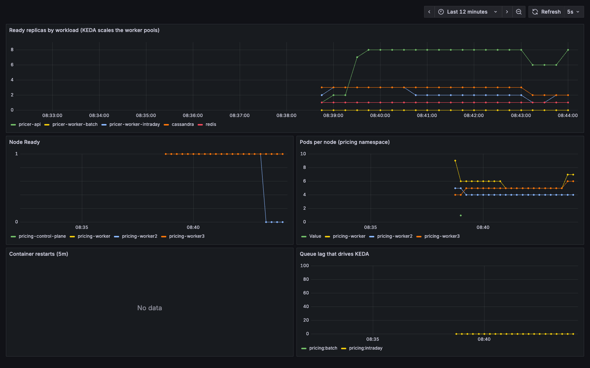
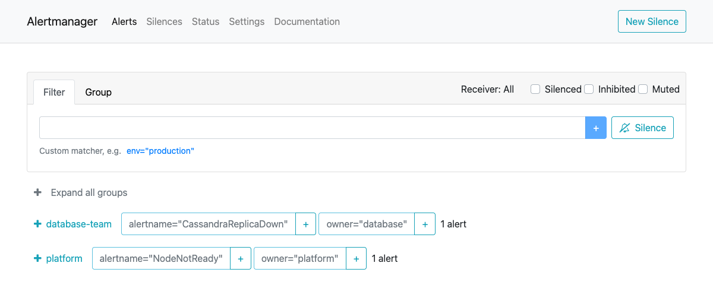
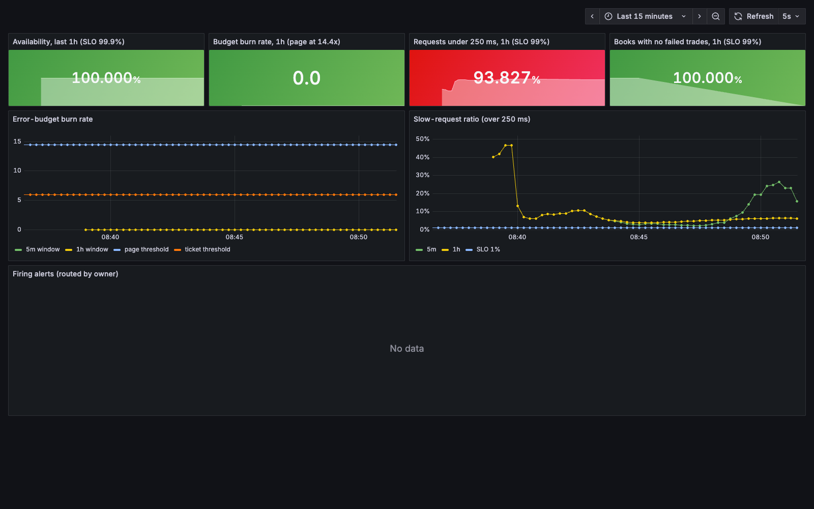
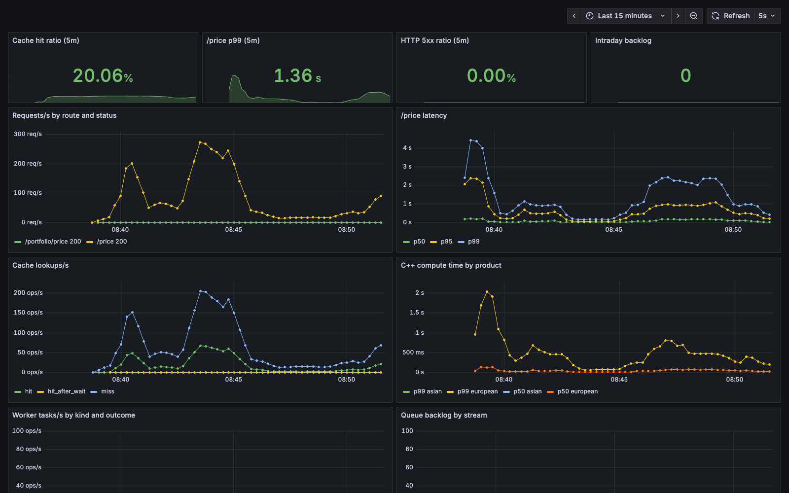
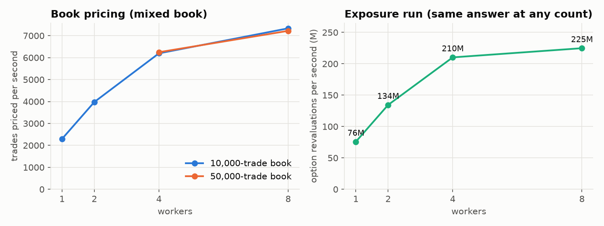
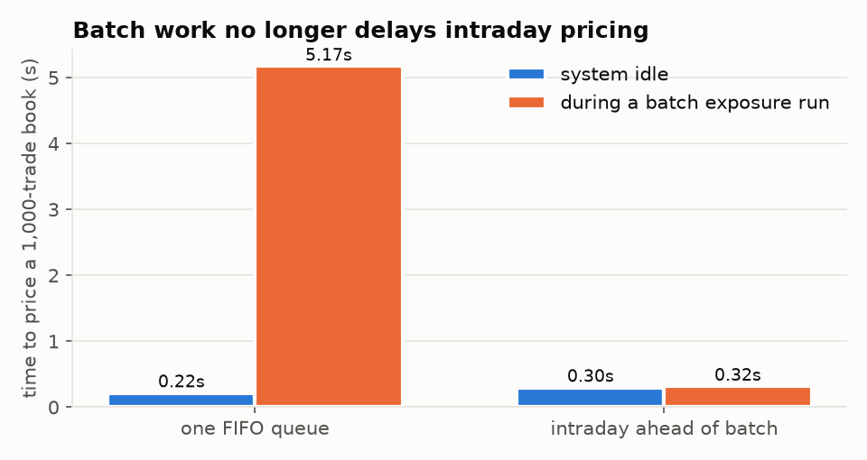
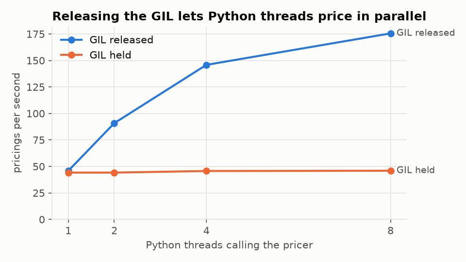
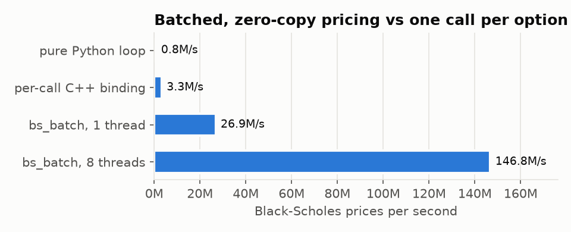

Distributed Pricing Service
I built a front-office pricing platform in miniature and then tried to break it. A C++ pricing and risk library sits behind a Python service. Books and risk runs are spread across Kubernetes worker pools, with Redis and Cassandra underneath. The cluster is managed in Rancher and observed end to end, and chaos tests kill its pods, its databases and a whole node while it is under load.
What a core engineering team needs to be able to do
The role supports a distributed analytics library used for front-office pricing. The team triages issues intraday and routes them to the right people, runs the environment together with support teams, and reviews the architecture for performance. I built the smallest system where all of that is real, and then did each of those jobs on it.
| The job | What I built and did |
|---|---|
| Support a distributed analytics library | A C++20 library (Monte Carlo, closed forms, exposure and CVA) used from Python through pybind11, served on /price, distributed for books and risk runs |
| Triage intraday, route to the right team | Alerts carry an owner label that Alertmanager routes on; a triage CLI names the owner and the runbook section; a runbook with 14 real incidents |
| Manage the environment with support teams | Kustomize base and overlays, a 4-node cluster across 3 zones imported into Rancher, SLOs and dashboards as code |
| Review the architecture, propose improvements | A performance review with 14 findings, each measured before and after, including three of my own hypotheses that the measurements disproved |
| Kubernetes, Docker, Rancher · Redis, Cassandra · Python, C++ | All in use, each where it fits; the diagrams below show where and why |
Three request paths, one shared core
Single prices are answered synchronously by the API pods. Books are cut into tasks on a Redis Stream that an intraday worker pool consumes. Exposure runs go to a separate batch stream and pool. KEDA sizes both pools on queue lag. Cassandra keeps the price log behind a write-behind queue, so pricing never waits for it.
The decision everything leans on: deterministic randomness
Each price's random numbers come from a counter-based generator (Philox) keyed by a hash of the request. Path i therefore gets the same numbers on any thread, any worker and any node. That one property makes caching safe and makes splitting work across workers exact. It also means re-running a crashed worker's task is harmless.
Design decisions and what they cost
| Decision | Instead of | Why | Cost I accepted |
|---|---|---|---|
| Redis Streams with consumer groups for tasks | A Redis list, or Kafka | Per-message acks, reclaim of a dead consumer's work (XAUTOCLAIM), lag that KEDA can read; one less system to run | Redis is a single instance here; its AOF keeps queued work across restarts but not across losing its node |
| Two streams and two pools (intraday, batch) | One FIFO queue | A large risk run can never sit in front of a trader's book | Two pools to size; batch scales from zero and pays a cold start |
| Cassandra for the price log, written behind | Postgres, or synchronous writes | Append-heavy, time-bucketed, query-first tables with TTL; RF 3 survives a node | A log row can lag the price by up to a second; a crash can drop the unwritten tail (measured, alerted) |
| Results written before the ack | Ack on receipt | At-least-once delivery; a re-run task is harmless because prices are deterministic | A task can be priced twice after a crash |
| KEDA on stream lag | HPA on CPU | Lag leads; CPU lags behind a queue | Another controller, and its own failure domain |
| Observability on the control plane | Scheduled anywhere | Monitoring must not die with the node it is watching (found by a chaos run) | On a real cluster, dedicated infra nodes or a separate cluster |
A book's life, including the worker that dies
A 2,000-trade book becomes 40 tasks. Each task makes one cache read, one vectorised C++ call with the GIL released, and one pipelined write. If a worker is killed mid-task, its unacked message is claimed by another worker after 10 seconds idle and priced again, with the same answer.
Why intraday and batch have separate streams
Where everything runs, and what a node failure takes with it
The cluster has four kind nodes: one control plane and three workers, labelled as three zones. Stateless pods spread across zones and leave an unreachable node after 30 seconds. Cassandra keeps one replica per node, so quorum survives any single node. Rancher runs outside the cluster and manages it through an agent that connects out to it.


- Environments as overlays. One Kustomize base, a kind overlay (NodePorts, observability) and a prod overlay (5% trace sampling, larger pools), validated in CI with kubeconform against the KEDA CRDs.
- Config as one hashed ConfigMap, so a config change rolls the pods instead of drifting.
- Probes that mean something. Readiness drops a pod whose dependencies it cannot serve without; a background Cassandra connection keeps startup probes from killing pods while the ring forms (runbook incident 9).
Chaos: kill everything, keep pricing
This is ten minutes of realistic load: continuous single prices, a 2,000-trade book every 15 seconds and an exposure run every 150 seconds. Meanwhile a schedule of 11 faults SIGKILLs API pods, workers, a Cassandra node and Redis, and stops one whole Kubernetes node for two minutes. Hover over the chart to replay the run.
bench/results/chaos-run3.json, in 5-second buckets. The numbered lines are the faults. Throughput rises when a book finishes and frees CPU for single prices, because the whole cluster shares one laptop.| Result | Value | Why it holds |
|---|---|---|
| Single prices served | 99.992% (6 errors in 76,481) | Readiness drops dead pods, pods leave a lost node after 30 s, circuit breakers skip a dead Redis |
| Books completed | 29 of 30 (3 retried) | A killed worker's tasks are reclaimed with XAUTOCLAIM; books are idempotent, so a connection failure is retried once |
| Trades failed in completed books | 0 of 58,000 | Results are written before the ack; a re-run task gives the same price |
| Exposure runs | 4 of 4, bit-identical | Counter-based RNG and an exact merge; the batch stream survives Redis restarts on its AOF |
| Latency across the run | p50 28.8 ms · p99 553.0 ms | Admission control sheds load with a 503 rather than queueing without bound |
What happens when a node dies
for durations. The shaded window is where the chaos runs lost books, which is what the proposed fix (resubmit by job id) targets.
pricing-worker2 is Unavailable and tainted unreachable.
What the chaos runs found. Run 1 lost 3 books at the connection level before Kubernetes declared the node NotReady; the fix was an idempotent retry. Run 2 showed that the node alert could never fire, because kube-state-metrics was running on the node that died; the fix was moving the observability stack to the control plane.
Still open. In run 3, 1 of 30 books failed on both attempts, with connection resets during the outage. A single HTTP retry is too short for a two-minute outage. The next step is an idempotency key that the client polls on.
Every alert has an owner and a runbook
The objectives are 99.9% availability and 99% of prices under 250 ms, written down in docs/SLO.md and alerted on multi-window burn rate rather than fixed thresholds. All fourteen alerts carry an owner label and a runbook_url. Alertmanager routes on the owner and inhibits the symptoms of a known root cause.

NodeNotReady goes to platform and CassandraReplicaDown to the database team.


Measured before and after, every time


Autoscaling from zero
The performance review
Each finding follows the same pattern: observation, hypothesis, change, measurement, decision. Three of the hypotheses were wrong, and those write-ups are kept too.
- Where book pricing stops scaling
- A measurement mistake, and what the price log really costs
- Write-behind for the price log
- Batch risk was blocking intraday pricing
- Task granularity
- Kernel CPU throttling, and a fix that did not move latency
- Releasing the GIL, and batch interfaces
- Variance reduction: performance through maths
- Circuit breakers (measured when introduced)
- Exposure runs: scaling and exactness
- Chaos runs: what broke, and what the fixes bought
- KEDA scale-from-zero: what idle batch capacity costs
- What tracing costs
- Where the monitoring runs
The library underneath


- The Philox RNG is checked against published test vectors, and results are bit-identical for any thread count.
- RAII and cache-line-aligned scratch avoid false sharing. A test counts
operator newto prove there is no allocation per path. Exceptions are carried safely across threads. - AddressSanitizer, UBSan, ThreadSanitizer and Valgrind run clean, including Valgrind on the Python extension, which leaks nothing per call.
- Variance reduction doubles as a performance tool: the Asian control variate cuts variance 1,009×, so 198 paths match 200,000.
Run the whole thing locally
make cluster # 4-node kind cluster, KEDA, the app, Prometheus, Alertmanager, Grafana, Jaeger make rancher # Rancher, with the cluster imported make demo # guided walkthrough: prices, a 10,000-trade book, an exposure run, a failure, triage make chaos # the 10-minute chaos run
The limits, plainly: everything runs on one laptop, so the scaling numbers show the mechanics rather than cluster capacity. The models are textbook (GBM, flat curves, no collateral in the exposure run). Redis is persistent but not replicated. The prod overlay is validated but has not run on a production cluster.